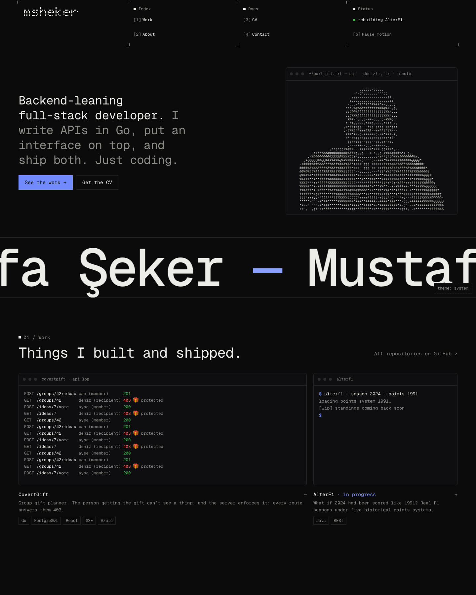
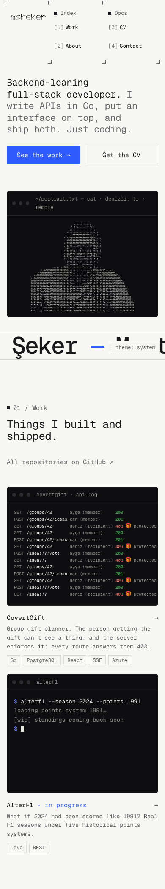
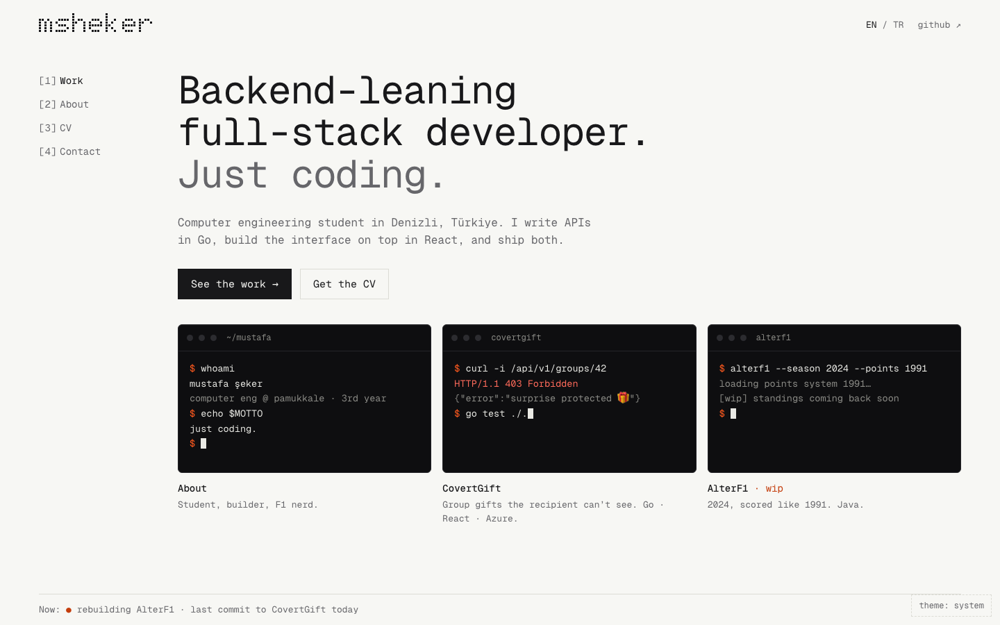
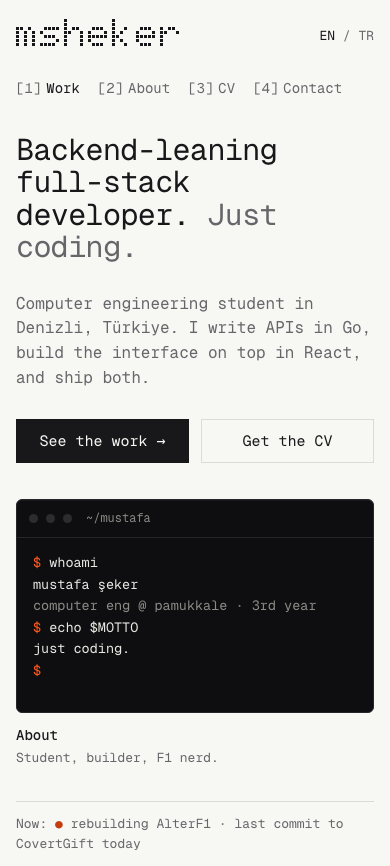
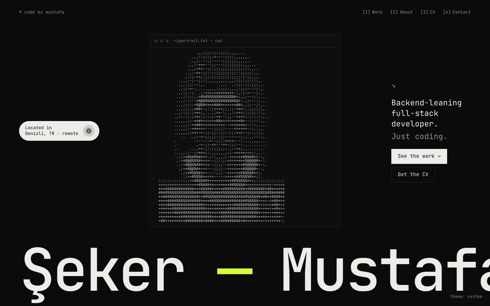
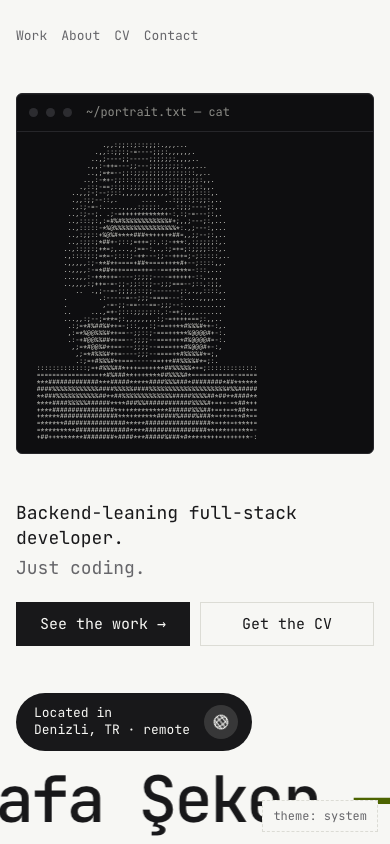
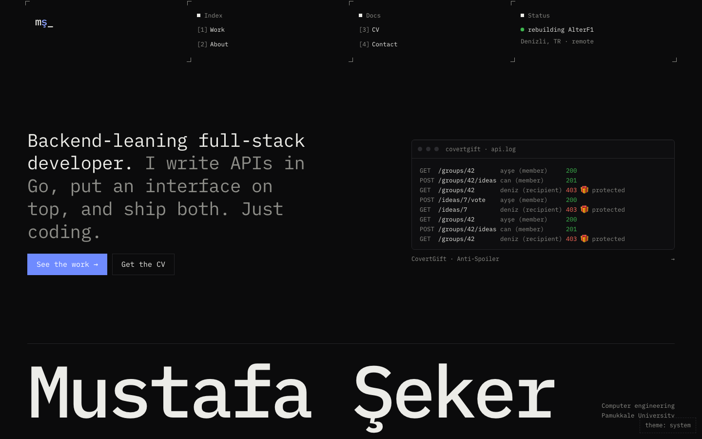
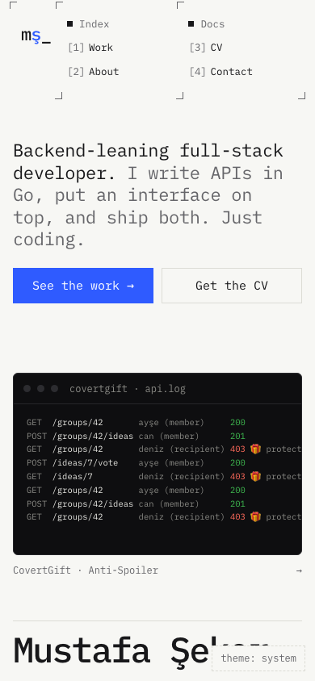

Yön: "Terminal editoryal" (D-009). Üçü de aynı metni kullanıyor; fark kurgu, font ve vurgu renginde. Her sayfada sağ alttaki theme düğmesiyle açık/koyu temayı değiştirebilirsin, 1–4 tuşları menüde gezinir.


Geist Mono · kobalt · iki ekran: hero + work
[p] hareketi durdurma

opencode.ai ağırlıklı · Geist Mono · sinyal turuncusu


Dennis Snellenberg ağırlıklı · JetBrains Mono · asit yeşili


Ravi Klaassens ağırlıklı · IBM Plex Mono · kobalt (CovertGift'in mavisi)